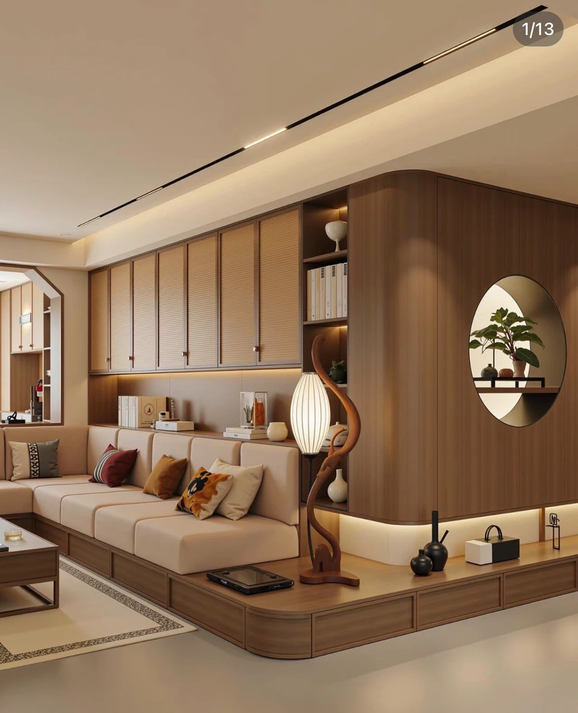
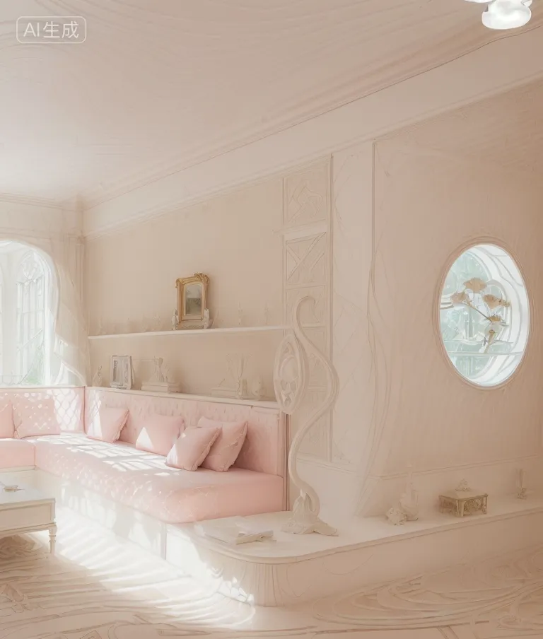
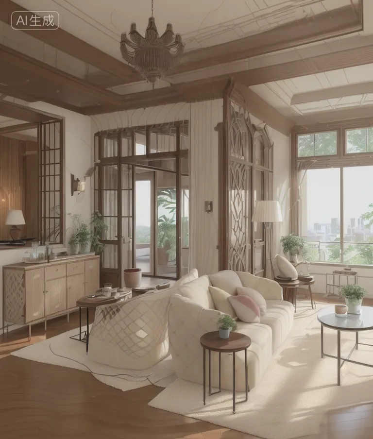
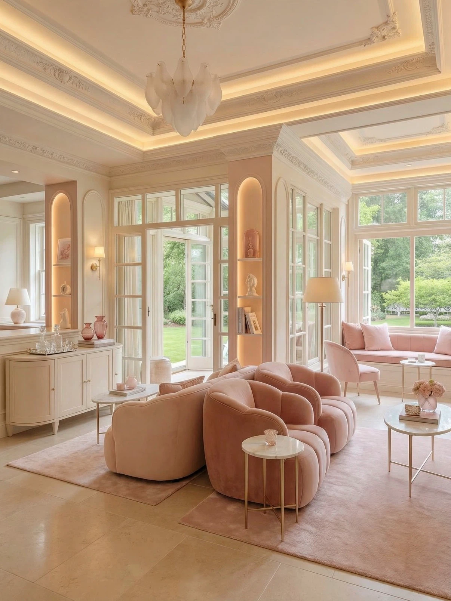
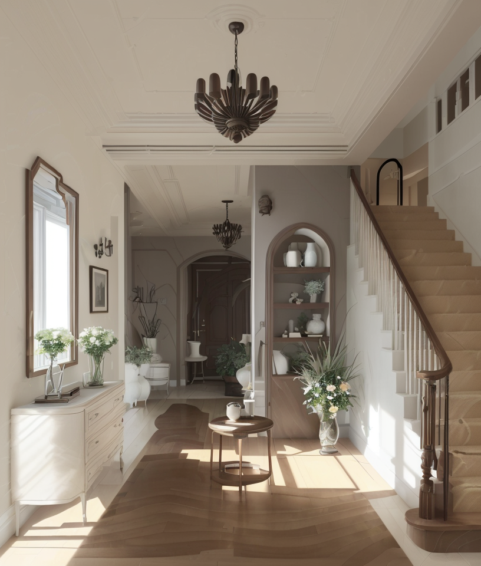
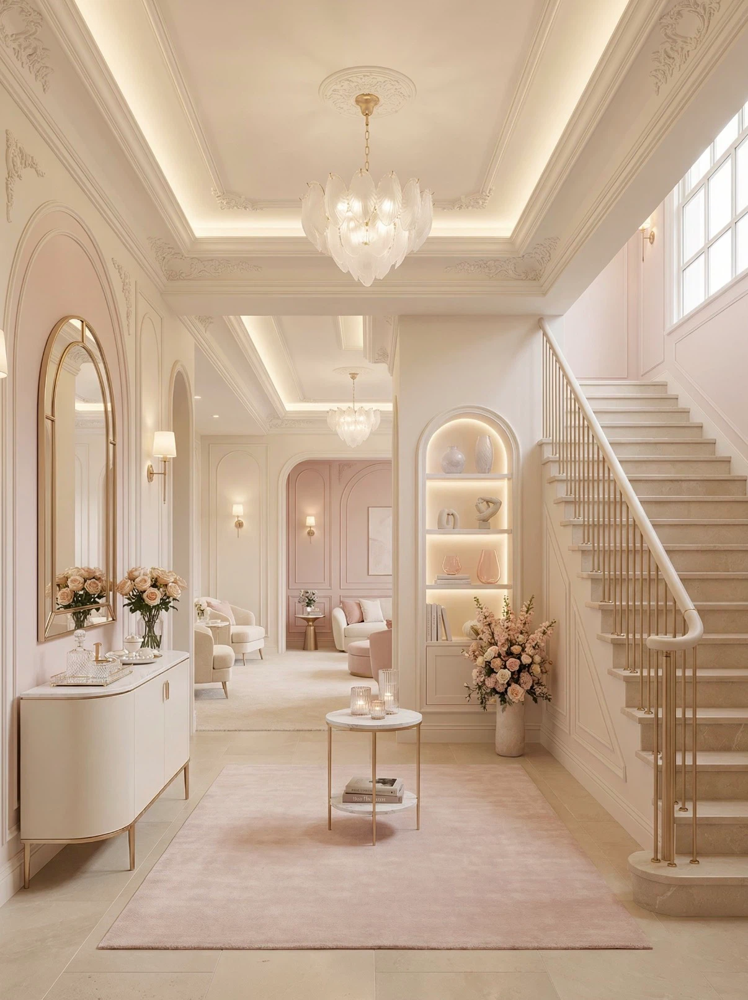
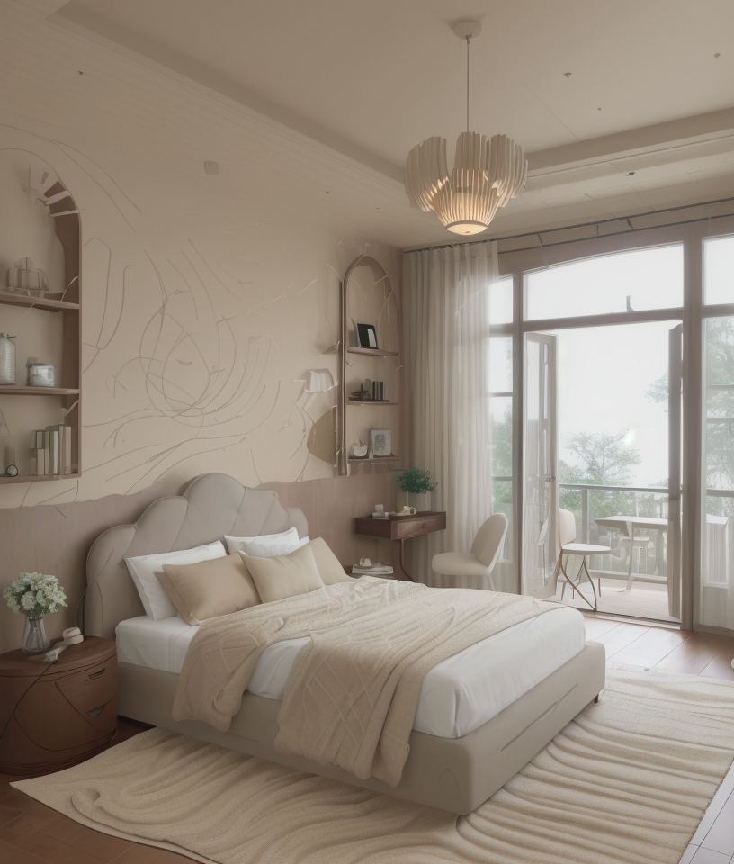
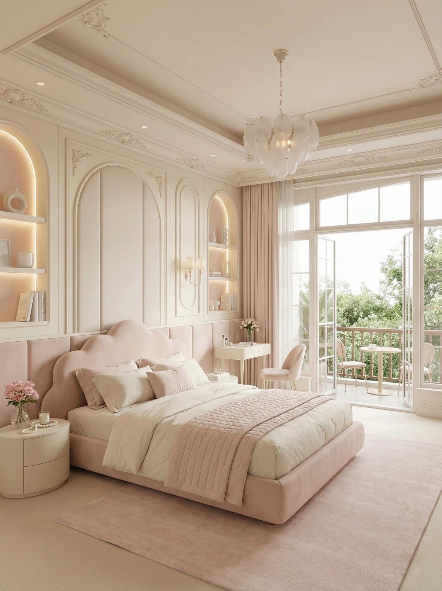

PROJECT OVERVIEW
项目概述
以同一空间作为统一基准，通过 AI 风格迁移在保留原始空间结构、透视与基本布局的基础上，生成多种设计风格的空间效果，快速对比不同风格方向的视觉呈现。
VISUAL EXPLORATION 05 · 2026 · SPATIAL AI
AI 空间风格迁移
AI-ASSISTED SPATIAL STYLE TRANSFER
以同一空间为基准，通过 AI 在保留空间结构与透视关系的前提下，迁移不同设计风格，快速探索法式、原木、奶油等多种空间视觉方向。

PROJECT OVERVIEW & OBJECTIVE
PROJECT OVERVIEW
以同一空间作为统一基准，通过 AI 风格迁移在保留原始空间结构、透视与基本布局的基础上，生成多种设计风格的空间效果，快速对比不同风格方向的视觉呈现。
PROJECT OBJECTIVE
探索 AI 在空间概念阶段快速风格预演的能力：同一空间一键切换多种设计风格，辅助设计师和业主在方案前期高效比较风格方向，降低沟通与迭代成本。
PROJECT BACKGROUND & AI TECHNOLOGY
同一空间需要快速尝试不同风格方向，传统效果图难以在短时间内对比多种设计风格。
本项目以原始空间为基础，通过 AI 风格迁移在保留空间结构与透视的前提下，将整体视觉风格切换为目标风格（如侘寂、现代简约、法式复古等），用于空间风格方向的快速探索与方案对比。
TOOLS
GENERATION
以原始空间图为结构输入，配合目标风格参考图与提示词，由 AI 对空间整体进行风格重绘。
WORKFLOW
WORKFLOW
SCROLL →
空间结构与透视关系
法式 / 原木 / 奶油等方向
材质 · 色彩 · 软装语言
生成多风格空间结果
结构与透视比对修正
多风格横向对比
BEFORE & AFTER
按住中间分割线左右拖动：向右显示原始空间 BEFORE，向左显示 AI 风格迁移后的 AFTER。








CONCLUSION
AI-ASSISTED SPATIAL STYLE EXPLORATION
本项目展示了 AI 在空间风格迁移中的辅助能力：以同一空间为基准，快速生成多种设计风格的视觉结果，在方案前期高效比较风格方向，提升空间概念探索与方案沟通效率。